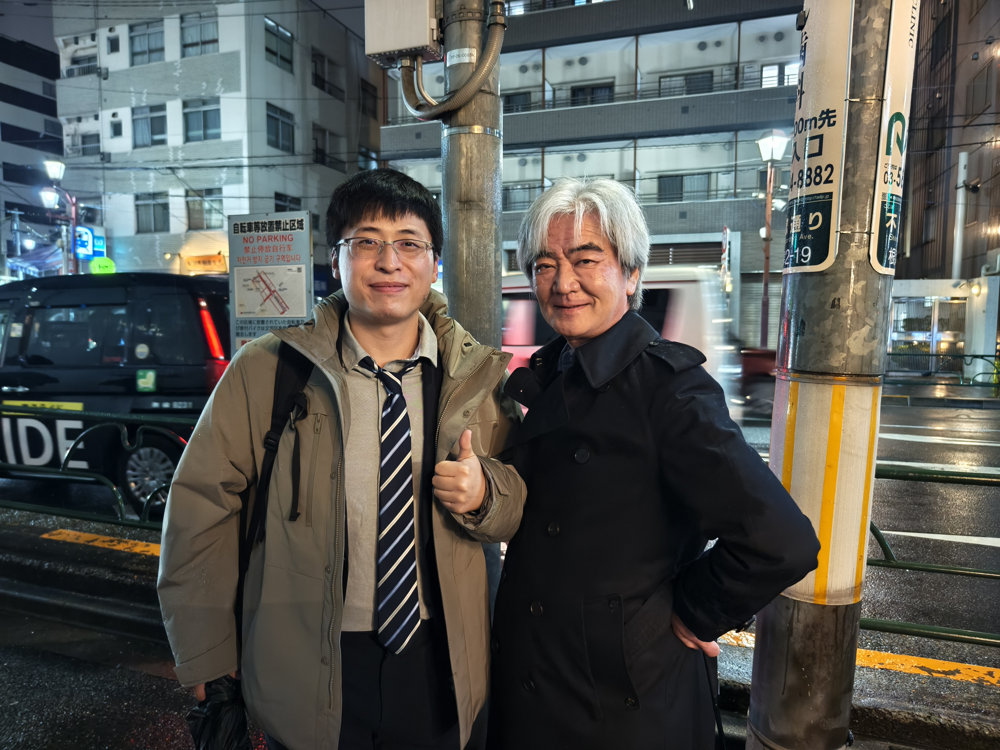

Pengcheng Pan
Researcher in Human-Centered Active Perception
I study brain-inspired active vision under constraints, with a focus on hard attention, human-like scanpaths, interpretable perception, active inference and human-AI interaction.

About
I am a researcher working on active perception, hard attention, and human-centered AI. My research explores how constrained sensing can produce interpretable and human-like behavior, especially in visual attention and multimodal systems.
Activities & Updates
Pengcheng Pan, Shogo Yonekura, Yasuo Kuniyoshi.
脳と心のメカニズム 冬のワークショップ 2026, Hokkaido, March 9–11, 2026.
Pengcheng Pan, Shogo Yonekura, Yasuo Kuniyoshi.
32nd International Conference on Neural Information Processing (ICONIP 2025).
Oral.
Pengcheng Pan, Shogo Yonekura, Yasuo Kuniyoshi.
6th International Workshop on Active Inference (IWAI 2025).
Non-archival poster.
Pengcheng Pan, Shogo Yonekura, Yasuo Kuniyoshi.
RSJ 2022 (The Robotics Society of Japan Annual Conference), Tokyo, October 28–30, 2022.
Education
-
The University of Tokyo
PhD in Mechano-Informatics / Active Vision
2023 – 2026 -
The University of Tokyo
Master's in Mechano-Informatics / Active Vision
2021 – 2023 -
Jiangnan University
Bachelor's in Mechatronics / Non-destructive testing
2015 – 2019
Research Experience
-
The University of Tokyo
PhD Researcher
2023 – 2026
Active perception, hard attention, human-like scanpaths, multimodal AI -
Corpy&Co., Inc.
Research Intern
2023 – 2024
LLM, Knowledge Graph, GraphRAG -
Chulalongkorn University
Research Intern
2023
Sound recognition, Explainability, GradCAM -
Tata Consultancy Services Japan
Research Intern
2022
Robotics, multimodal AI
Research Focus
Active Vision & Hard Attention
Sequential evidence acquisition under sensing constraints and sequencial cognitive process (scanpath) alignment.
Active Inference and Cognitive Feelings
Brain-inspired perception and action driven by uncertainty reduction, and internal models.
Human-centered Interactive AI
Designing interactive AI systems that mediate between performance, safety, and human control.
Selected Projects
Selected Publications
-
EVA: Bridging Performance and Human Alignment in Hard-Attention Vision Models for Image Classification
Pengcheng Pan, Yonekura Shogo, Yasuo Kuniyosh
Under review, 2026. -
GCS: Debiasing Central Fixation Confounds Reveals a Peripheral" Sweet Spot" for Human-like Scanpaths in Hard-Attention Vision
Pengcheng Pan, Yonekura Shogo, Yasuo Kuniyosh
Under review, 2026.
[paper] -
MRAM: Emergence of Fixational and Saccadic Movements in a Multi-Level Recurrent Attention Model for Vision
Pengcheng Pan, Yonekura Shogo, Yasuo Kuniyosh
ICONIP 2025 proceedings oral
[paper] -
HITL: Human-in-the-Loop Hard Attention for Privacy-Aware Active Vision
Pengcheng Pan, Yonekura Shogo, Yasuo Kuniyosh
Accepted by JSAI 2026.
Live Milestones
ACM MM Submission
Loading...
NeurIPS Submission
Loading...
IWAI Submission
Loading...
Next Major Milestone
Loading...
Contact
Email: pengcheng.pan97@gmail.com
GitHub: github.com/pengcheng-pan97
Google Scholar: Profile